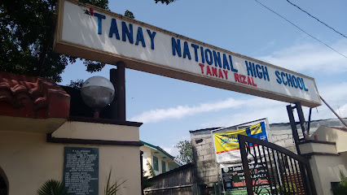

SCHOOL AND UNIVERSITIES


Tanay, Rizal, hosts various educational institutions, catering to the diverse needs of its residents. The Tanay National High School is a prominent secondary school in the area, providing quality education to students. Additionally, Tanay Elementary School serves as a foundational institution for primary education.
The town is also home to private educational institutions, contributing to the overall educational landscape. These include Tanay Adventist Elementary School and Tanay Adventist Academy, providing a private, values-based education.
While Tanay primarily focuses on basic education, residents often pursue higher education in nearby areas or in Metro Manila due to its proximity. Access to tertiary education is facilitated by various colleges and universities in the surrounding regions, offering a range of academic programs.